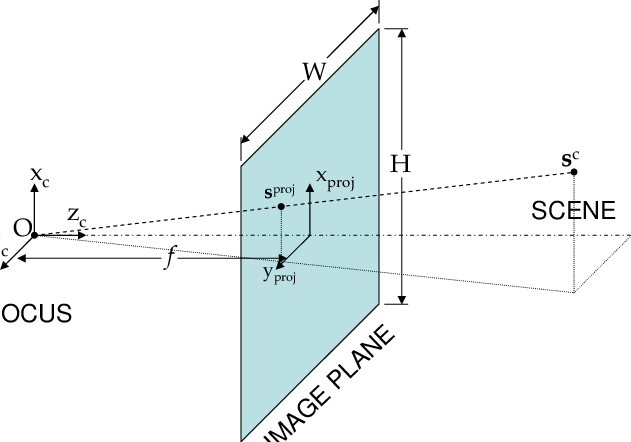
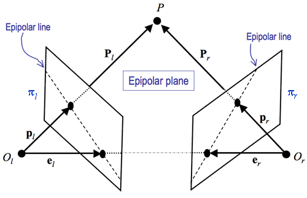

Stanford CS 229, 231A, 231N and Berkeley CS 280 Notes
Note: in progress
Stanford 231A: Computer Vision
Camera Models
Pinhole camera model: An aperature limits the light from a 3D scene hitting the film, creating a 1-to-1 correspondence between the 3d object and a point on the film which forms a 2d image. As the aperture size increases, each point on the film can be affected by multiple points in 3D space, causing a blur. Conversely, a smaller aperture causes a darker but sharper image.
To capture sharp and bright photos, lenses refract light to converge at a single point on the image plane (holds for a single point, not all 3d points in a scene). Lenses focus a specific distance and blur other distances.
Depth of field: effective range at which cameras can take clear photos

When the pinhole/center of camera (O) is placed behind the image/retinal plane, it is termed the virtual plane. The focal distance (f) represents the distance between the image plane and the pinhole O. The projection of the 3d image onto the image plane and the image plane onto the virtual plane are similar.
Define the camera coordinate system centered at O and let the z axis be perpendicular to the image plane, called the optical axis.
Given corresponding points (x', y') in 2d-space and (x, y, z) in 3d-space, [x', y'] = [\(fk \frac{x}{z}\), \(fl \frac{y}{z}\)] = [\(\alpha \frac{x}{z}+c_x\), \(\beta \frac{y}{z}+c_y\)], where f is the focal length and k and l are parameters for change of units to pixels and \([c_x, c_y]\) are a translation vector since the image plane origin is at the center and images typically have their origin at the lower left corner of the image.
Radial distortion: portions of the lens have differing focal lengths which causes image magification to decrease (barrel distortion) or increase (pincushion distortion).
Homogenous coordinates: Introduce a new coordinate, so (x, y) becomes (x, y, 1). Similarly, the relationship between a point in 3d-space and 2d-space is \(P' = \begin{bmatrix} x' \\ y' \\ z \end{bmatrix} = \begin{bmatrix} \alpha & 0 & c_x & 0 \\ 0 & \beta & c_y & 0 \\ 0 & 0 & 1 & 0 \end{bmatrix} \begin{bmatrix} x \\ y \\ z \\ 1\end{bmatrix} = \begin{bmatrix} \alpha & 0 & c_x & 0 \\ 0 & \beta & c_y & 0 \\ 0 & 0 & 1 & 0 \end{bmatrix}P = \begin{bmatrix} \alpha & 0 & c_x \\ 0 & \beta & c_y \\ 0 & 0 & 1 \end{bmatrix} \begin{bmatrix} I & 0 \end{bmatrix} P = K \begin{bmatrix} I & 0 \end{bmatrix} P\)
Skewness: the angle between the two axes is slightly larger or smaller than 90 degrees
To account for skew, the camera matrix \(K = \begin{bmatrix} x' \\ y' \\ z \end{bmatrix} = \begin{bmatrix} \alpha & -\alpha cot\theta & c_x \\ 0 & \frac{\beta}{sin\theta} & c_y \\ 0 & 0 & 1 \end{bmatrix}\). The 5 degrees of freedom of K (2 for focal length, 2 for offset, and 1 for skew) are the intrinsic parameters which are specific to a camera.
Extrinsic parameters are the rotation matrix R and translation vector T which convert any world reference system to camera coordinates as follows and do not depend on the camera: \(P = \begin{bmatrix} x \\ y \\ z \\ 1 \end{bmatrix} = \begin{bmatrix} R & T \\ 0 & 1 \end{bmatrix}P_w\)
Single View Metrology
Isometric transformation: transformations that preserve distances (translation/reflection/rotation), mathematically \(\begin{bmatrix} x' \\ y' \\ 1 \end{bmatrix} = \begin{bmatrix} R & t \\ 0 & 1 \end{bmatrix} \begin{bmatrix} x \\ y \\ 1 \end{bmatrix}\), where \(\begin{bmatrix} x' \\ y' \\ 1 \end{bmatrix}\) is the point after the transformation
Similarity transformation: preserve shape plus scaling. Mathematically, \(\begin{bmatrix} x' \\ y' \\ 1 \end{bmatrix} = \begin{bmatrix} SR & t \\ 0 & 1 \end{bmatrix} \begin{bmatrix} x \\ y \\ 1 \end{bmatrix}\), where \(S = \begin{bmatrix} s & 0 \\0 & s \end{bmatrix}\)
Affine transformation: preserve parallelism, defined \(T(v) = Av + t\), where \(A\) is the linear transformation and is mathematically \(\begin{bmatrix} x' \\ y' \\ 1 \end{bmatrix} = \begin{bmatrix} A & t \\ 0 & 1 \end{bmatrix} \begin{bmatrix} x \\ y \\ 1 \end{bmatrix}\)
Projective transformation/homography: maps lines to lines, but may not preserve parallelism. Mathematically, \(\begin{bmatrix} x' \\ y' \\ 1 \end{bmatrix} = \begin{bmatrix} A & t \\ v & b \end{bmatrix} \begin{bmatrix} x \\ y \\ 1 \end{bmatrix}\). Further, the cross ratio of four collinear points (\(P_1, P_2, P_3, P_4\)) defined \(\frac{\lVert P_3-P_1\rVert \lVert P_4 - P_2\rVert}{\lVert P_3-P_2\rVert \lVert P_4 - P_1\rVert}\) is invariant during projective transformations.
Projective geometry: To find the angle between two vectors \(v_1, v_2\), \(cos \theta = \frac{d_1 \cdot d_2}{\lVert d_1 \rVert \lVert d_2 \rVert} = \frac{v_1^T \omega v_2}{\sqrt{v_1^T \omega v_1}\sqrt{v_2^T \omega v_2}}\) and between planes using their normal vectors \(n_1, n_2\) and vanishing lines \(l_1, l_2\) which are the projective transformation of a two parallel lines in 3d-world onto a line in 2d-world (i.e. horizon line and can be computed \(l_{horiz} = \begin{bmatrix} A & t \\ v& b\end{bmatrix}^{-T} l_{\infty}\)): \(cos \theta = \frac{n_1 \cdot n_2}{\lVert n_1 \rVert \lVert n_2 \rVert} = \frac{l_1^T \omega^{-1} l_2}{\sqrt{l_1^T \omega^{-1} l_1} \sqrt{l_2^T \omega^{-1} l_2}}\), where \(\omega = (KK^T)^{-1}\)
Epipolar Geometry

THe projection of the point P in 3d-space onto the image plane is denoted \(p_l\) and \(p_r\). The camera centers are at \(O_l\) and \(O_r\). The line connecting them is called the baseline baseline. Where the baseline intersects the two image planes are called epipoles, denoted \(e_l\) and \(e_r\). The epipolar plane is defined by the two camera centers and the 3D point P. The intersection of the epipolar plane and the image planes form epipolar lines.
An essential matrix relates corresponding points between two calibrated cameras and is defined as the product of the transpose of the calibration matrix of the specific camera (T) and the relative pose matrix between the two cameras (R). Solving for \(y_l = E^Tp_l\) and \(y_r = E^Tp_r\) gives the epipolar lines on the image planes. Also, \(E^T \cdot e_l = E^T \cdot e_r=0\) since \(e_l\) and \(e_r\) are on the same epipolar line for corresponding projections
Now, lets go into the mathematical definitions. Given a series of correspondences \({x_1, y_1, x_2, y_2}\), camera intrinsic matrix \(K_1, K_2\), the aim is to solve R and T for a specific camera and the depth \(\alpha\) for the first camera and \(\beta\) for the second camera. The projections on the image plane are defined \(p_l = K_1^{-1}[x_1, y_1, 1]^{T}\) and \(p_r = K_2^{-1}[x_2, y_2, 1]^{T}\), then \(\beta p_r = \alpha R p_l + T\). The epipolar constraint states \(p_r^{T}(T \times Rp_l) = 0\) due to their coplanarity.
Image Rectification: compute homographies to apply to the slanted image planes to make them parallel to one another. Using the fundamental matrix from the 8-point algorithm, we can find the epipolar lines and correspondences. To find the homographies, we solve a least squares problem \(Wa = b\) for a where \(W = \begin{bmatrix} \hat{x}_1 & \hat{y}_1 & 1 \\ \vdots & \vdots & \vdots \\ \hat{x}_n & \hat{y}_n & 1 \\ \end{bmatrix}\) and \(b = \begin{bmatrix} \hat{x'}_1 \\ \vdots\\ \hat{x'}_n\\ \end{bmatrix} \) then use a to solve \(H_a = \begin{bmatrix} \ a_1 & a_2 & a_3 \\ \ 0 & 1 & 0 \\ \ 0 & 0 & 1 \\ \end{bmatrix}\) and the the homography to rectify the second image \(H_2 = T^{−1}GRT = \begin{bmatrix} \ 1 & 0 & -\frac{width}{2} \\ \ 0 & 1 & -\frac{height}{2} \\ \ 0 & 0 & 1 \\ \end{bmatrix}^{-1} \begin{bmatrix} \ 1 & 0 & 0 \\ \ 0 & 1 & 0 \\ \ -\frac{1}{f} & 0 & 1 \\ \end{bmatrix} \begin{bmatrix} \ \alpha \frac{e_1}{\sqrt{e_1^2+e_2^2}} & \alpha \frac{e_2}{\sqrt{e_1^2+e_2^2}} & 0 \\ \ -\alpha \frac{e_2}{\sqrt{e_1^2+e_2^2}} & \alpha \frac{e_1}{\sqrt{e_1^2+e_2^2}} & 0 \\ \ 0 & 0 & 1 \\ \end{bmatrix} \begin{bmatrix} \ 1 & 0 & -\frac{width}{2} \\ \ 0 & 1 & -\frac{height}{2} \\ \ 0 & 0 & 1 \\ \end{bmatrix}\) and the corresponding homography to rectify the first image that minimizes the squared distance summed of corresponding points between images \(H_1\) from solving \(\arg \min_{H1} \lVert H_1 p_i - H_2 p'_i \rVert^2 \) where \((e_1, e_2, 1)\) are homogenous coordinates and \(\alpha = 1\) if \(e_1 \geq 1\) else \(\alpha = -1\). After applying this transformation, we finally have an epipole at infinity, so we can translate back to the regular image space. Using \(H_1, H_2\), two images can be rectified given a set of corresponding points.
Stereo Systems and Structure from Motion
|